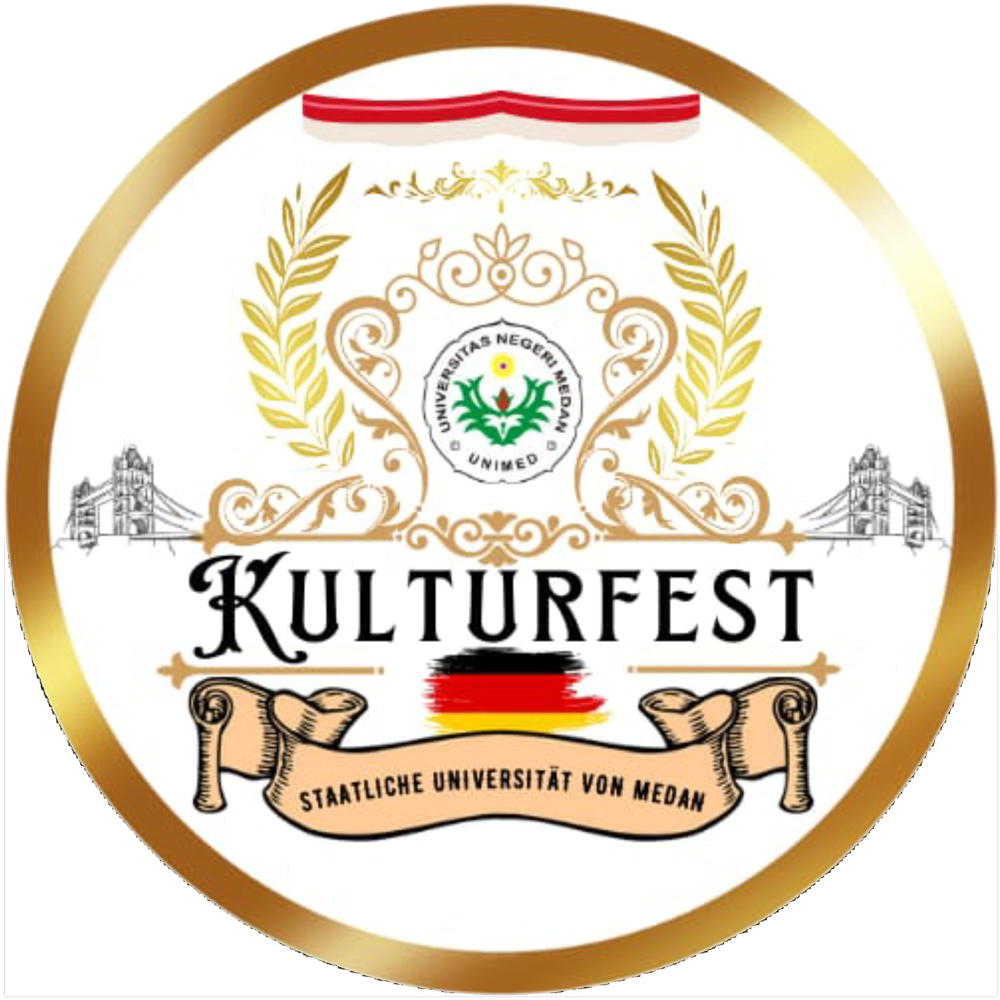
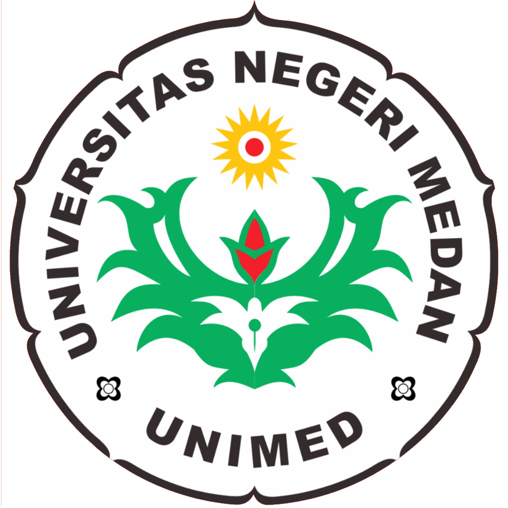
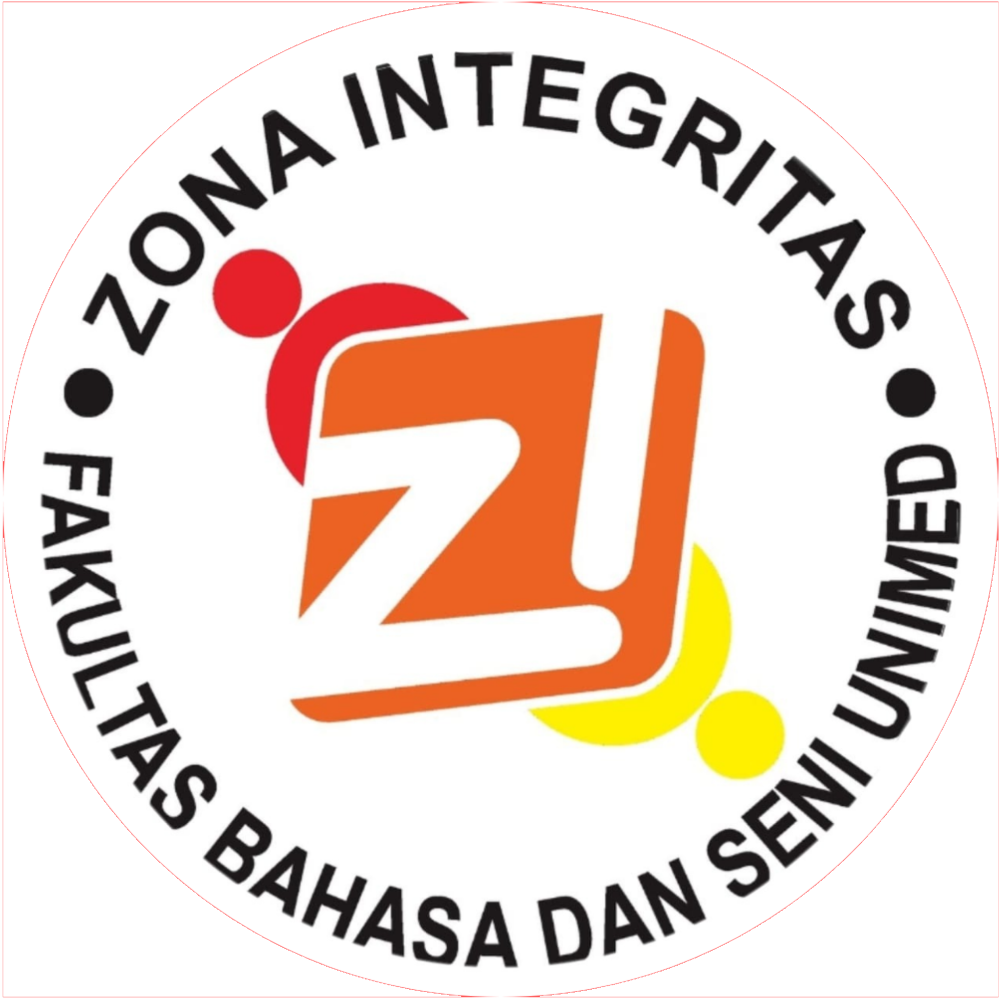
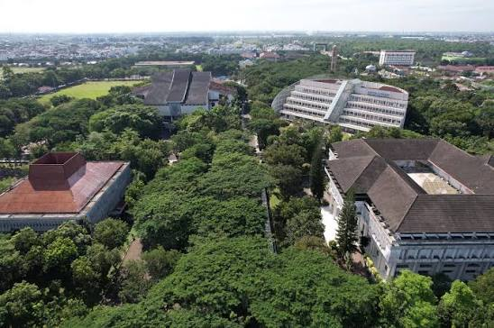
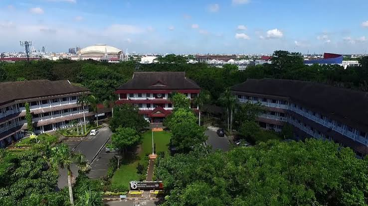

Menyatu dalam Keberagaman, Merajut Kebersamaan
United in Diversity, Weaving Togetherness
Willkommen auf der offiziellen Website von Kulturfest 2026 Universitas Negeri Medan! Vielen Dank, dass Sie sich die Zeit nehmen, unsere Veranstaltung zu besuchen. Diese Website wurde erstellt, um die Anforderungan des Wettbewerbs zu erfüllen und gleichzeitig den Geist von Einheit in Vielfalt. Wir hoffen, dass Sie Freunden daran haben, die Geschichten, Traditionen und die Kreativität zu entdecken, die auf dieser Website präsentiert werden. Vielen Dank für Ihren Besuch und wir hoffen, dass Sie die Kulturfest 2026 genießen werden!
KulturFest merupakan kegiatan akademik dan budaya yang mengadaptasi konsep festival budaya Jerman, termasuk semangat Oktoberfest, sebagai media pembelajaran bahasa, promosi budaya Jerman, serta pengembangan kreativitas mahasiswa melalui berbagai pertunjukan seni, lomba, permainan, dan kuliner khas Jerman.

Universitas Negeri Medan (UNIMED) merupakan salah satu perguruan tinggi negeri di Indonesia yang memiliki sejarah panjang dalam bidang pendidikan.
Cikal bakal UNIMED berawal dari FKIP USU. Pada tahun 1963, lembaga tersebut berkembang menjadi IKIP Jakarta Cabang Medan. Selanjutnya, pada 15 Maret 1965, IKIP Medan ditetapkan sebagai institusi pendidikan yang berdiri sendiri.
Berdasarkan Keputusan Presiden Nomor 124 Tahun 1999, IKIP Medan berubah menjadi Universitas Negeri Medan (UNIMED). Perubahan ini memperluas mandat UNIMED sehingga tidak hanya menyelenggarakan pendidikan kependidikan, tetapi juga berbagai program studi nonkependidikan.

Program Studi Pendidikan Bahasa Jerman merupakan salah satu program studi di Fakultas Bahasa dan Seni Universitas Negeri Medan yang berfokus pada pengembangan kemampuan berbahasa Jerman serta pemahaman terhadap budaya dan pendidikan bahasa.
Program studi ini mempersiapkan mahasiswa untuk memiliki kompetensi dalam bidang pendidikan dan pengajaran Bahasa Jerman serta mampu berkomunikasi dalam konteks nasional maupun internasional.
Pilih kategori peserta untuk melihat perlombaan yang tersedia.
Perlombaan untuk siswa SMA/SMK/MA sederajat dari seluruh Indonesia.
Tes Kemampuan Bahasa Jerman A1 merupakan kompetisi akademik untuk mengukur kemampuan bahasa Jerman siswa sesuai tingkat kompetensi A1. Lomba dilaksanakan secara offline dan mencakup Lesen, Hören, Schreiben, serta Grammar & Wortschatz.
Siswa SMA/MA/SMK sederajat dari seluruh Indonesia. Lomba dilaksanakan secara individu.
Akan ditambahkan.
Rp30.000,-
Kompetisi kreativitas yang menampilkan kostum berdasarkan tokoh dalam dongeng atau cerita rakyat Indonesia maupun Jerman. Peserta menjelaskan konsep kostum menggunakan bahasa Jerman melalui video.
Siswa SMA/MA/SMK sederajat dari seluruh Indonesia. Dilaksanakan secara berkelompok dengan 2–5 anggota.
Akan ditambahkan.
Rp75.000,-
Perlombaan yang menguji kekuatan, keseimbangan, dan daya tahan melalui permainan dari budaya Jerman dan Indonesia. Terdiri dari Masskrugstemmen untuk peserta putra dan Angkat Tandok Berisi Beras untuk peserta putri.
Siswa SMA/MA/SMK sederajat dari seluruh Indonesia. Lomba dilaksanakan secara individu.
Pemenang ditentukan berdasarkan durasi bertahan paling lama sesuai ketentuan perlombaan.
Akan ditambahkan.
Rp30.000,-
Kompetisi penyampaian pidato berbahasa Jerman secara jelas, ekspresif, dan sesuai tema “Einheit in Vielfalt” dengan subtema Permainan Tradisional Jerman–Indonesia.
Siswa SMA/MA/SMK sederajat dari seluruh Indonesia yang belum pernah tinggal di Jerman atau negara berbahasa Jerman lainnya. Lomba dilaksanakan secara individu.
Akan ditambahkan.
Rp30.000,-
Lomba membawakan puisi berbahasa Jerman secara ekspresif melalui video. Peserta memilih satu dari lima puisi yang disediakan panitia dan membawakannya dengan penghayatan serta konsep penampilan yang sesuai.
Siswa SMA/MA/SMK sederajat dari seluruh Indonesia. Lomba dilaksanakan secara individu.
Akan ditambahkan.
Rp30.000,-
Kompetisi karya tulis akademik berbahasa Jerman yang mengembangkan kemampuan analisis dan penulisan ilmiah terkait budaya Jerman–Indonesia sesuai tema “Einheit in Vielfalt”.
Siswa SMA/MA/SMK sederajat dari seluruh Indonesia. Lomba dilaksanakan secara individu.
Akan ditambahkan.
Rp30.000,-
Kompetisi adu ketangkasan berpikir dan pengetahuan umum dengan sistem gugur. Peserta yang menjawab salah akan tereliminasi hingga tersisa satu orang sebagai pemenang.
Siswa SMA/MA/SMK sederajat dari seluruh Indonesia. Lomba dilaksanakan secara individu.
Akan ditambahkan.
Rp30.000,-
Perlombaan untuk mahasiswa sesuai ketentuan masing-masing lomba.
Kompetisi akademik untuk mengukur kemampuan bahasa Jerman tingkat B1. Tes dilaksanakan secara offline dan mencakup Lesen, Hören, Schreiben, serta Grammar & Wortschatz.
Mahasiswa semester 4 ke atas. Lomba dilaksanakan secara individu.
Akan ditambahkan.
Rp30.000,-
Kompetisi kreativitas kostum berdasarkan tokoh dongeng atau cerita rakyat Indonesia maupun Jerman yang disertai penjelasan konsep menggunakan bahasa Jerman melalui video.
Mahasiswa dari seluruh Indonesia. Berkelompok, terdiri dari 2–5 anggota.
Akan ditambahkan.
Rp75.000,-
Ajang kreativitas desain visual bertema “Einheit in Vielfalt” dan subtema Permainan Tradisional Jerman–Indonesia. Poster menampilkan pesan mengenai budaya, persatuan, dan permainan tradisional kedua negara.
Mahasiswa aktif dari seluruh Indonesia. Dilaksanakan secara individu dan maksimal mengirimkan satu karya.
Akan ditambahkan.
Rp30.000,-
Perlombaan kekuatan, keseimbangan, dan daya tahan melalui Masskrugstemmen dan Angkat Tandok Berisi Beras.
Mahasiswa dari seluruh Indonesia. Dilaksanakan secara individu.
Ditentukan berdasarkan durasi bertahan paling lama.
Akan ditambahkan.
Rp30.000,-
Kompetisi pidato berbahasa Jerman sesuai tema “Einheit in Vielfalt” dan subtema Permainan Tradisional Jerman–Indonesia melalui video.
Mahasiswa dari seluruh Indonesia yang belum pernah tinggal di Jerman atau negara berbahasa Jerman lainnya. Individu.
Akan ditambahkan.
Rp30.000,-
Kompetisi membawakan salah satu puisi berbahasa Jerman yang disediakan panitia melalui video secara ekspresif dan penuh penghayatan.
Mahasiswa dari seluruh Indonesia. Lomba dilaksanakan secara individu.
Akan ditambahkan.
Rp30.000,-
Kompetisi penulisan artikel ilmiah berbahasa Jerman mengenai budaya Jerman–Indonesia sesuai tema KulturFest 2026.
Mahasiswa dari seluruh Indonesia. Lomba dilaksanakan secara individu.
Akan ditambahkan.
Rp30.000,-
Kompetisi pengetahuan umum dan ketangkasan berpikir menggunakan sistem gugur hingga tersisa satu peserta sebagai pemenang.
Mahasiswa dari seluruh Indonesia. Lomba dilaksanakan secara individu.
Akan ditambahkan.
Rp30.000,-
Perlombaan terbuka untuk masyarakat umum sesuai ketentuan masing-masing lomba.
Perlombaan yang menguji kekuatan, keseimbangan, dan daya tahan melalui Masskrugstemmen untuk peserta putra dan Angkat Tandok Berisi Beras untuk peserta putri.
Masyarakat umum dari seluruh Indonesia. Lomba dilaksanakan secara individu.
Pemenang ditentukan berdasarkan durasi bertahan paling lama.
Akan ditambahkan.
Rp30.000,-
Kompetisi karya tulis ilmiah berbahasa Jerman mengenai budaya Jerman–Indonesia sesuai tema “Einheit in Vielfalt” dan subtema Permainan Tradisional Jerman–Indonesia.
Guru, peneliti, dan masyarakat umum dari seluruh Indonesia. Lomba dilaksanakan secara individu.
Akan ditambahkan.
Rp30.000,-
Kompetisi adu ketangkasan berpikir dan pengetahuan umum menggunakan sistem gugur. Peserta yang menjawab salah akan tereliminasi hingga tersisa satu pemenang.
Masyarakat umum dari seluruh Indonesia. Lomba dilaksanakan secara individu.
Akan ditambahkan.
Rp30.000,-
Pendaftaran untuk setiap lomba akan segera dibuka. Silakan klik tombol di bawah ini untuk mengisi formulir.
Daftar Sekarang →Seluruh informasi terbaru mengenai KulturFest 2026.
Pendaftaran KulturFest 2026 telah resmi dibuka.
Technical Meeting mengalami perubahan jadwal.
Hasil lomba akan diumumkan setelah seluruh perlombaan selesai.
Pukul 19.00 WIB melalui Zoom Meeting.
Seluruh perlombaan akan dilaksanakan sesuai rundown.
Dokumentasi dan suasana KulturFest akan ditampilkan di sini.
Foto 1
Foto 2
Foto 3
Foto 4
Foto 5
Foto 6
Ada pertanyaan, saran, atau ingin bekerja sama? Jangan ragu untuk menghubungi kami ya! 🌈
Terima kasih telah mengunjungi website Kulturfest 2026. Sampai jumpa di acara kami! 🌈